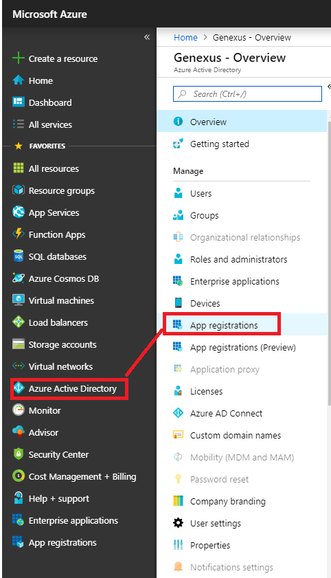
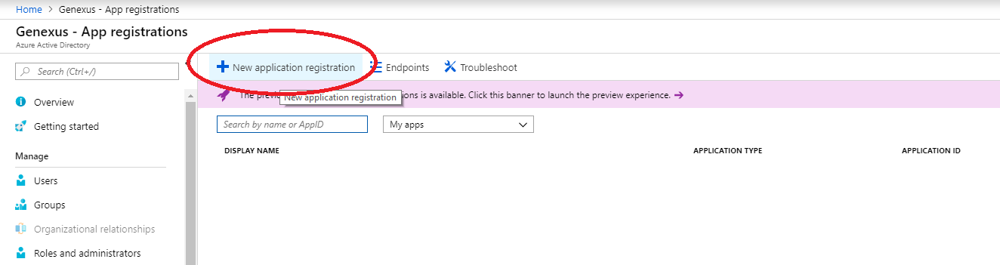
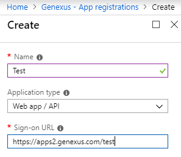
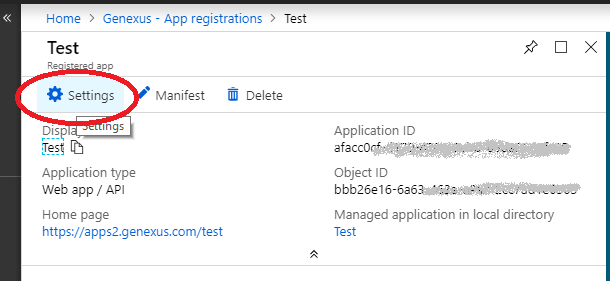
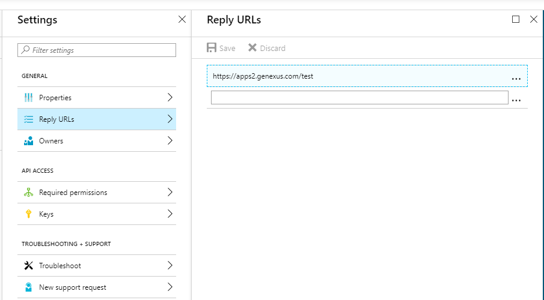
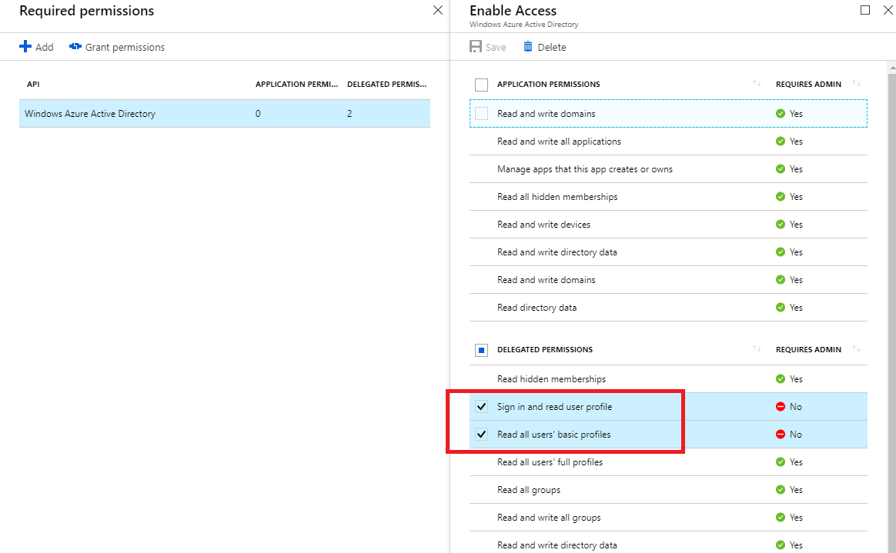
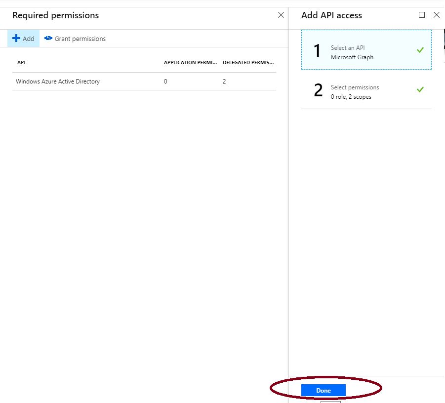
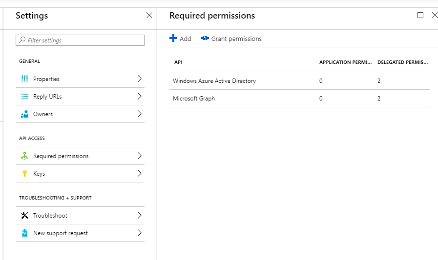
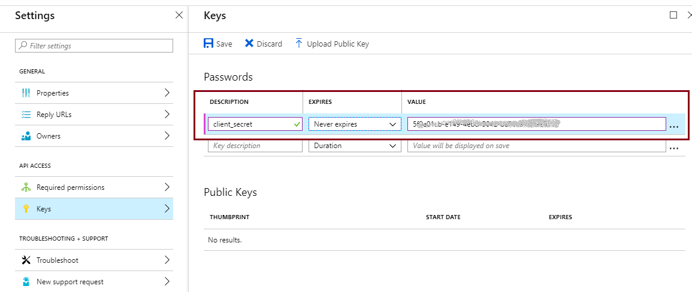

When you need to authenticate to Office 365 using GAM, you will first have to create an application in Azure portal.
Following the steps explained here, you will have all the information necessary to configure the GAM Oauth 2.0 authentication type for using Office 365.
The steps below should be followed to create an Application within the Azure Portal:
Important note: the following screens capture can be different depending on the Azure Portal version that you are using. We recommend to see the document Register an app with the Azure Active Directory
- Sign in to your Azure Account through the Azure portal.
- Select Azure Active Directory -> App registrations.

- Select New application registration.

- Fill Name Application Name, Type and Sign-on URL

Note: The Sign-on URL is not used for the callback after the login. The URL used for that purpose should be configured in Step 5 (Reply URLs)
- Click on Settings.

- Select the section Reply URLs and configure accordingly (by default, you have the same URL specified in Step 3.) This URL is used for the callback. You may specify more than one if you have more than one app using the same Azure application.

- Go through "Required Permissions" to configure at least the following permissions:
- Microsoft Graph
- Windows Azure Directory
Each of them must include the following settings (access to Delegated Permissions: "Sign in and read user profile" and "Read all user's basic profiles" ).


So, you will have:

- Configure the client secret of the application. Go through "Keys", and add a new key, whose description should be "client_secret" (with that casing). Configure the expiration and the value (it should be a valid GUID).

Note the warning: Copy the key value. You will not be able to retrieve it after leaving this blade.
- Done! If needed, the Manifest with the application detail is available.
Note: You will need the Application Id (= Client Id), the client_secret, and the Reply URL for configuring the GAM Oauth 2.0 authentication type.
Register an app with the Azure Active Directory
HowTo: Authenticate to Azure Active Directory using GAM